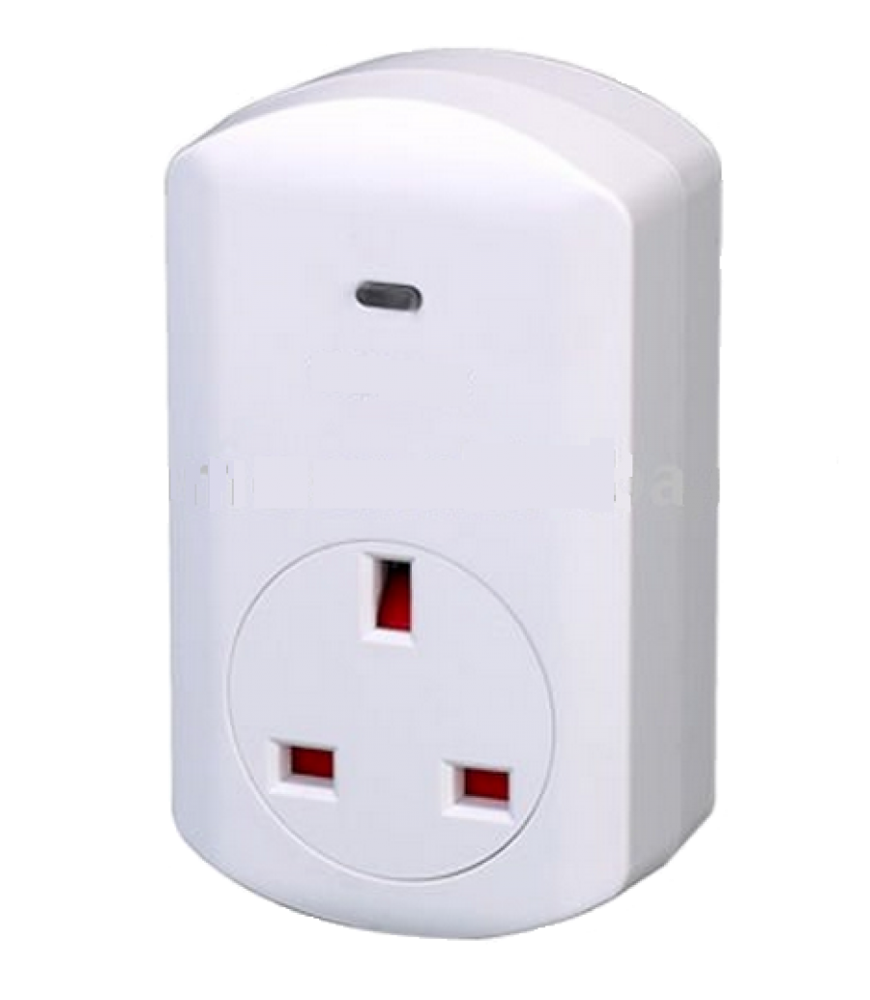
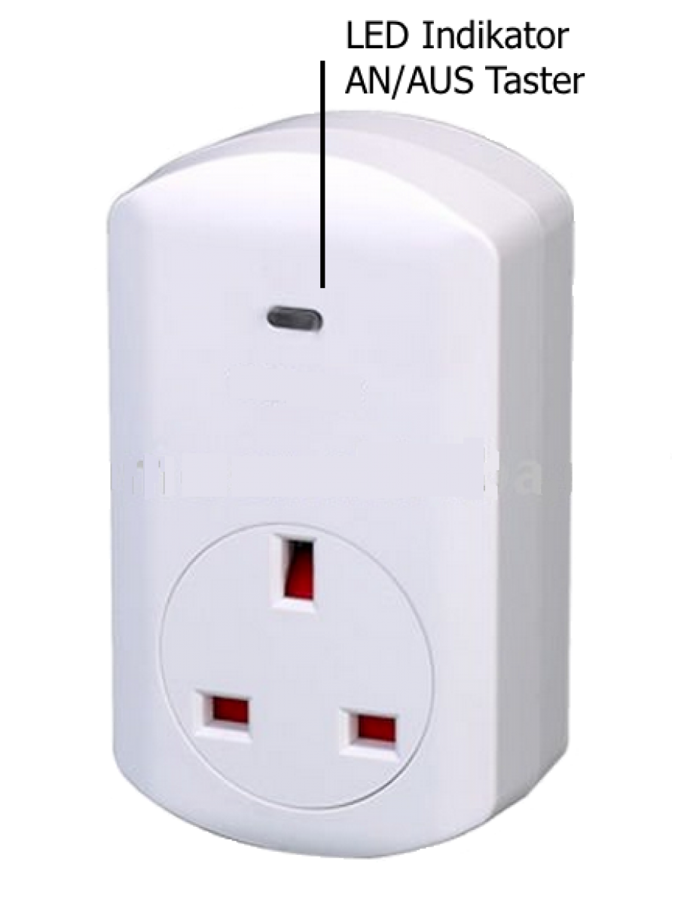
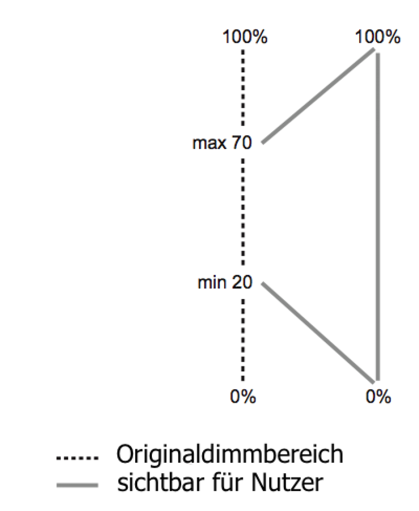

POP_123603
Firmware Version : 1.0 |
 |
KurzinfoA Dies ist ein Z-Wave-Schaltaktor. Inklusion und Exklusion werden durch einen Dreifachklick auf den Taster bestätigt. Weitergehende Informationen finden sich in den jeweiligen Abschnitten dieses Handbuches. |
Produktbeschreibung
Dieser Dimmer-Zwischenstecker kann an jede britische Steckdose (Steckertyp G) angesteckt werden und dimmt Lasten bis 300 W. Das Gerät ist ein Phasenanschittdimmer, kann jedoch dank Nullpunktkompensation und anderer Optimierungsmöglichkeiten neben induktiven (Trafos) und ohmschen (Glühlampe, Hochvolthalogen) auch die meisten kapazitiven Lasten (Schaltnetzteile, LED Leuchten, Energiesparleuchten) dimmen, wenn diese Leuchtmittel dimmbar sind. Das Gerät hat die Schutzklasse IP20 und kann daher nur in trockenen Innenräumen eingesetzt werden. Es wird über Z-Wave Funkkommandos oder über den lokalen Taster bedient. Eine blaue LED zeigt den Dimmerzustand an, kann aber über Funk auch für andere Funktionen umprogrammiert werden. Ein programmierbarer Zeitgeber sowie ebenfalls programmierbares Verhalten bei Funkkommandos erlauben einen sehr flexiblen Einsatz des Gerätes im Haus. Eine Baby-Schlaf-Funktion ermöglicht das ganz langsame Herunterdimmen von einem definierten in einen anderen definierten Wert.
Installationsanleitung
Das Gerät kann in jede britische Steckdose (Stecker-Typ G) gesteckt werden. Es verfügt über Schutzgrad IP20 und darf daher nicht in feuchten Umgebungen eingesetzt werden. Die Umgebungstemperatur sollte zwischen 0°C und 40°C liegen. Aus Überhitzungsgründen sollte das Gerät nicht direktem Sonnenlicht ausgesetzt werden. Pro Steckdose darf nur ein Gerät eingesteckt werden; ein Übereinanderstecken mehrerer Geräte ist nicht erlaubt.
Verhalten des Gerätes im Z-Wave Netz
I Im Auslieferungszustand ist das Gerät mit keinem Z-Wave-Netz verbunden. Damit es mit anderen Z-Wave Geräten kommunizieren kann, muss es in ein bestehendes Z-Wave Netz eingebunden werden. Dieser Prozess wird bei Z-Wave Inklusion genannt. Geräte können Netzwerke auch wieder verlassen. Dieser Prozess heißt bei Z-Wave Exklusion. Beide Prozesse werden von einem Controller gestartet, der dazu in einen Inklusion- bzw. Exklusion-Modus geschaltet werden muss. Das Handbuch des Controllers enthält Informationen, wie er in diese Modi zu schalten ist. Erst wenn der Controller des Z-Wave Netzes im Inclusion-Modus ist, können Geräte hinzugefügt werden. Das Verlassen des Netzes durch Exklusion führt zum Rücksetzen dieses Gerätes in den Auslieferungszustand.
Inklusion und Exklusion werden durch einen Dreifachklick auf den Taster bestätigt.
Bedienung des Gerätes

Bedienung am Gerät
- Wenn das Licht komplett ausgeschaltet ist, schaltet ein kurzer Druck auf die Taste den Dimmer auf den letzten Dimmzustand vor dem Ausschalten (der auch sehr niedrig gewesen sein kann).
- Ist das Licht angeschaltet - unabhängig von Dimmerniveau - schaltet ein kurzer Druck auf den Taster das Licht aus.
- Wird die Taste gedrückt gehalten, startet der Dimmer auf- oder abzudimmen. Die Dimmrichtung ist entgegengesetzt zur letzten Dimmrichtung in dieser Betriebsart (langer Druck).
LED Nutzung
Das Gerät verfügt über eine blaue LED, um Statusinformationen anzuzeigen. Die Funktion der LED kann durch Konfigurationsparameter
umprogrammiert werden:
- Dimmzustand (ein oder aus) - das ist der Auslieferungszustand
- Nachtlicht (invertierter Dimmzustand)
- komplett deaktiviert
- kontrolliert durch die Z-Wave Kommandoklasse "Indikator"
Automatisiertes Herunterdimmen
Diese Funktion ist im Auslieferungszustand deaktiviert. Wenn aktiviert, dimmt ein eingeschalteter
Dimmer nach einer definierbaren Zeit automatisch herunter. Dies ist zum Beispiel dann sinnvoll, wenn
der Dimmer durch das Steuersignal eines Bewegungsmelders oder eines anderen Sensors eingeschaltet
wurde. Konfigurationsparameter können auch das Verhalten bei einem Ausschaltkommando festlegen. Dies
ermöglicht einen flexiblen Einsatz in Automatisierungsszenarien.
Baby-Einschlaf-Funktion.
Der Dimmer kann genutzt werden, um Babies oder kleinen Kindern beim Einschlafen zu helfen. (Das Gerät
hat eine Kindersicherung an den Hochspannungsanschlussklemmen und kann damit ohne Bedenken in der
Nähe von Kinderbetten betrieben werden).
Wenn die Funktion aktiviert wurde, schaltet ein Doppelklick auf den Taster den Dimmer auf einen einstellbaren
Wert. Über einen längeren Zeitraum - zum Beispiel 30 Minuten - dimmet der Dimmer das Licht langsam herunter,
bis der ebenfalls zuvor definierte Wert erreicht ist.
Dimmen von LED-Leuchten und Energiesparleuchten
LED-Leuchten und Energiesparlampen sind aus mehreren Gründen nur sehr schwer dimmbar.
- Die Leuchten stellen eine sogenannte kapazitive Last dar, bei der der Strom der Spannung vorauseilt. Im Einschaltmoment erzeugen solche Lasten einen sehr hohen Einschaltstrom, der den Dimmer zerstören kann.
- Die Ansteuerung der LEDs oder der Leuchtstoffröhre in der Energiesparleuchte erfolgt durch eine Elektronik, die sich dem Dimmer gegenüber anders verhält als traditionelle Leuchten. Eine durch den den Dimmer mögliche Verringerung des Spannungsmittelwertes führt dann nicht automatisch zu einer Verringerung der Leuchtstärke, kann aber ein Flackern der Leuchte zur Folge haben.
Als Werkseinstellung dimmt das Gerät über die maximal mögliche Dimmbreite von 0% bis 100%. Falls Probleme auftreten, muss durch langsames Auf- oder Abdimmen das Dimmer-Niveau bestimmt werden, bei dem der Dimmer gerade noch zufriedenstellen funktionmiert. Das steuernde Gateway liefert dann den prozentualen Zahlenwert für dieses Dimm-Niveau, das dann mittels Konfigurationsparameter als neuer Endwert eingestellt wird. Ein Extremwert dieser Einstellung ist es, wenn nur die Dimm-Niveaus 0 % und 100 % erlaubt sind. In diesem Falle arbeitet der Dimmer als elektronischer Schalter und kann alle Leuchten steuern. Der Wert für das schnelle Dimmen (Parameter 5) sollte in diesem Fall auf 0 (sofortiges Dimmen) gesetzt werden.

Weitere Optimierungen für LED/Leichtstoffröhren (nur für Fachleute)
Die Konfigurationsparameter 51 bis 54 ermöglichen weitere Anpassungen des Dimmers an spezielle Erfordernisse von Leuchten.
Diese Werte sollten nur von Spezialisten und nur bei entsprechendem Fachwissen verändert werden! Falsche Konfigurationen
können zur Zerstörung des Dimmers und/oder der Leuchte führen.
Dimmer werden durch ein sogenanntes Nulldurchgangs-Signal gesteuert und steuern ihrerseits den Strom durch Zünden
eines TRIACs mittels eines Zündimpulses. Der TRIAC muss genau einmal in einer Halbwelle des 50 Hz Stromes gezündet werden.
Der Zyklus startet genau beim Nulldurchgang und dauert dann geräteintern 156 Zeitscheiben. Eine Zeitscheibe ist damit
10 ms/156 lang, da eine Halbwelle bei 50 Hz Netzfrequenz genau 10 ms dauert. Der Wert 51 definiert, wie viel Zeit nach dem
Nulldurchgang mindestens vergehen muss, bis der TRIAC gezündet werden darf. Dies ist unabängig vom Dimmer-Niveau.
Parameter 54 legt fest, of der Zündimpuls eine definierte Länge (kurz) hat oder bis zu einem Zeitpunkt anhält (lang), der durch
den minimalen Abstand des Zündimpulses von dem nächstfolgenden Nulldurchgang festgelegt ist.
Kinderschutz
Das Gerät verfügt über einen Kinderschutzmechanismus. Dabei wird die lokale Bedienung über Tasten gesperrt und es ist nur noch eine Bedoenung über Funk möglich.
Die Aktivierung eines Kinderschutzmodus kann nur via Funk, z.B. durch eine Funkfernbedienung, erfolgen. Durch 3-maliges Drücken der Taste kann diese Sicherung deaktiviert werden. Nach 5 Sekunden ohne Aktion wird der Kinderschutzmodus automatisch wieder aktiviert.
Assoziationen - wie werden andere Geräte gesteuert?
A Z-Wave Geräte können andere Geräte direkt steuern. Diese direkte Steuerung heißt in Z-Wave Assoziation. In den steuernden Geräten muss dazu die Geräte-ID des zu steuernden Gerätes hinterlegt werden. Dies erfolgt in sogenannten Assoziationsgruppen. Eine Assoziationsgruppe ist immer an ein Ereignis im steuernden Gerät gebunden (Tastendruck oder Auslösen eines Sensors). Bei Eintritt dieses Ereignisses wird an alle in einer Assoziationsgruppe hinterlegten Geräte ein Steuerkommando gesendet.
Assoziationsgruppen:
| 1 | Aktualisierung bei jeder Statusänderung (max. Anzahl Geräte: 5) |
Konfigurationseinstellungen
Z-Wave Produkte können direkt nach der Inklusion im Netz verwendet werden. Durch Konfigurationseinstellungen kann das Verhalten des Gerätes jedoch noch besser an die Anforderungen der Anwendung angepasst und zusätzliche Funktionen aktiviert werden.
WICHTIG: Manche Steuerungen erlauben nur die Konfiguration von vorzeichenbehafteten Werten zwischen -128 und 127. Um erforderliche Werte zwischen 128 und 255 zu programmieren, muss der gewünschte Wert minus 256 eingegeben werden. Beispiel: um einen Parameter auf einen Wert von 200 zu setzen, müsste der Wert 200-256 = -56 eingegeben werden, wenn nur positive Werte bis 128 akzeptiert werden. Bei Werten von 2 Byte Länge wird die gleiche Logik angewandt: Werte über 32768 werden als negative Werte angegeben
| Wert | Beschreibung |
|---|---|
| 0 | Deaktiviert |
| 1 | Zeigt Dimmer-Zustand (An/Aus) |
| 2 | Nachtlicht (invertierter Dimmer-Zustand) |
| 3 | gesteurt durch Funkkommando (Kommandoklasse 'Indicator') (Voreingestellt) |
| Wert | Beschreibung |
|---|---|
| 0 | Deaktiviert (Voreingestellt) |
| 1 — 65535 | Sekunden |
| Wert | Beschreibung |
|---|---|
| 0 | Ausschalten (Voreingestellt) |
| 1 | Ignorieren |
| 2 | Einschalten |
| 3 | Schalte ein, wenn ausgeschaltet und schalte aus, wenn eingeschaltet |
| Wert | Beschreibung |
|---|---|
| 0 | Nein |
| 1 | Ja (Voreingestellt) |
| Wert | Beschreibung |
|---|---|
| 0 | Sofort |
| 1 — 255 | in 10 ms Schritten (Voreingestellt 30) |
| Wert | Beschreibung |
|---|---|
| 1 — 255 | Sekunden (Voreingestellt 3) |
| Wert | Beschreibung |
|---|---|
| 0 | Letztes Dim-Niveau von Ausschalten (Voreingestellt) |
| 1 | maximales Dim-Niveau, wenn bereits eingeschaltet |
| 2 | immer auf maximales Dim-Niveau |
| Wert | Beschreibung |
|---|---|
| 0 | Deaktiviert (Voreingestellt) |
| 1 — 99 | in Minuten |
| Wert | Beschreibung |
|---|---|
| 0 — 255 | % (Voreingestellt 0) |
| Wert | Beschreibung |
|---|---|
| 1 — 100 | in 10 ms Schritten (Voreingestellt 50) |
| Wert | Beschreibung |
|---|---|
| 1 — 95 | Prozent (Voreingestellt 1) |
| Wert | Beschreibung |
|---|---|
| 0 | Funktioniert als Schalter zwischen 0 % und 100 % |
| 10 — 99 | Prozent (Voreingestellt 99) |
| Wert | Beschreibung |
|---|---|
| 0 | Zurück zum letzten Dimmerzustand (Voreingestellt) |
| 1 — 99 | Definiertes Dimmerniveau in % |
| Wert | Beschreibung |
|---|---|
| 5 — 60 | (Voreingestellt 28) |
| Wert | Beschreibung |
|---|---|
| 5 — 60 | (Voreingestellt 28) |
| Wert | Beschreibung |
|---|---|
| 3 — 20 | (Voreingestellt 10) |
| Wert | Beschreibung |
|---|---|
| 0 | Langer Impuls (Voreingestellt) |
| 1 | Kurzer Impuls |
Technische Daten
| Stromversorgung | 230V ~50-60 Hz |
| Schaltbare Lasten | ohmsche und industive Lasten bis 300 W, kapazitive Lasten bis 100 W |
| Schutzklasse | 20 |
| Z-Wave Frequenz | 868.42 MHz (SRD Band) |
| Funkreichweite | bis zu 100 m im Freifeld, üblich 20 m in Gebäuden |
| Explorer Frames | Ja |
| SDK | 4.54 pl1 |
| Geräteart | Slave with routing capabilities |
| Allgemeiner Z-Wave-Gerätetyp | Multilevel Switch |
| Spezieller Z-Wave-Gerätetyp | Multilevel Power Switch |
| Router | Ja |
| FLiRS | Nein |
| Firmware Version | 1.0 |